33 proyectos listos para consultar. Elige uno para abrir su aplicación:
tiene registro de usuarios, módulos con formularios, búsqueda y exportación a Excel.
I.E. Sol de Oriente 2025 · 12 proyectos
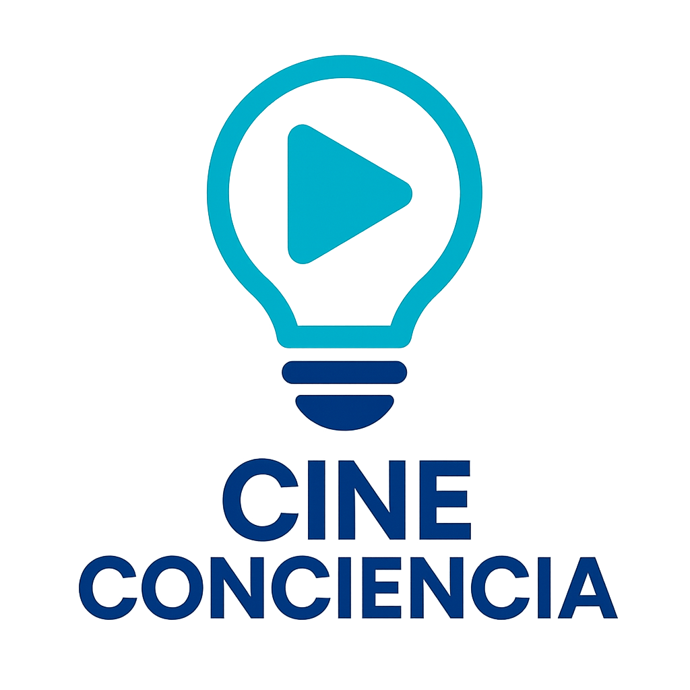
Cine conCiencia Aprender ciencia, sintiendo el cine Grado 11° · 8 módulos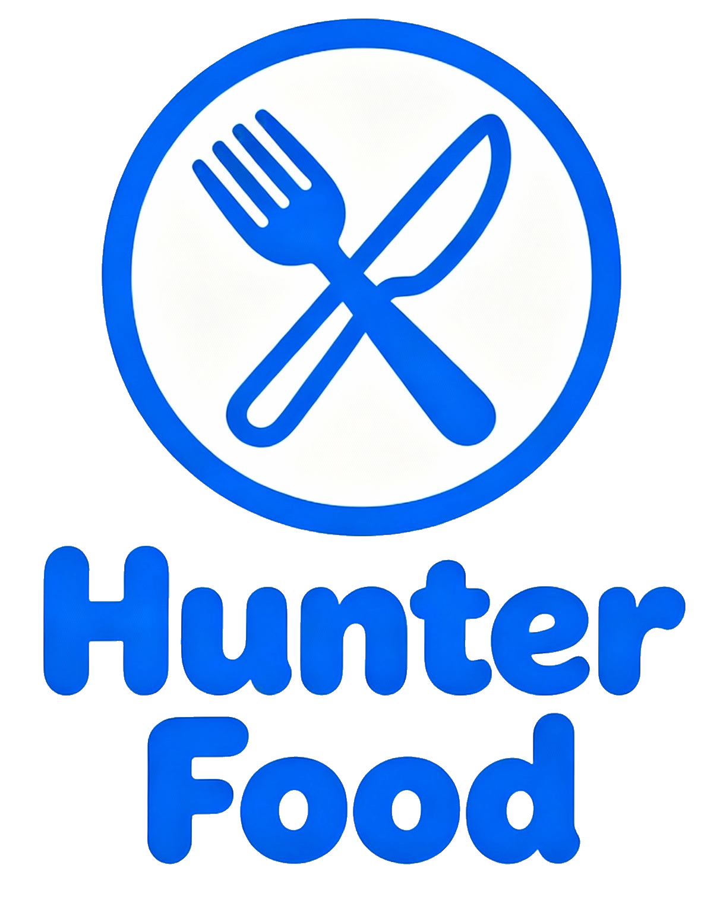
Hunter Food Come rico, sin filas Grado 11° · 8 módulos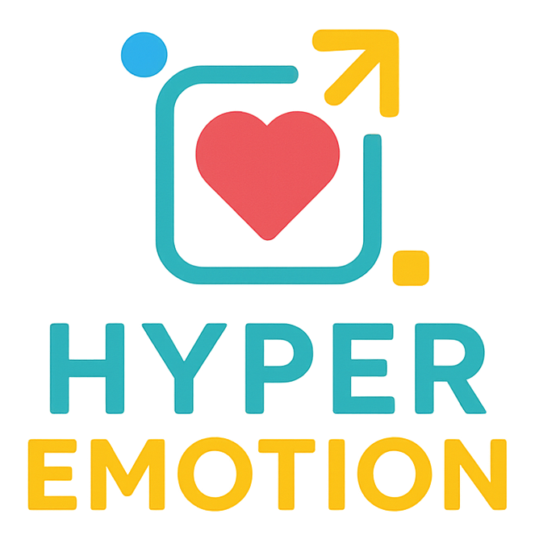
Hyper Emotion Entender lo que sientes es el primer paso Grado 11° · 7 módulos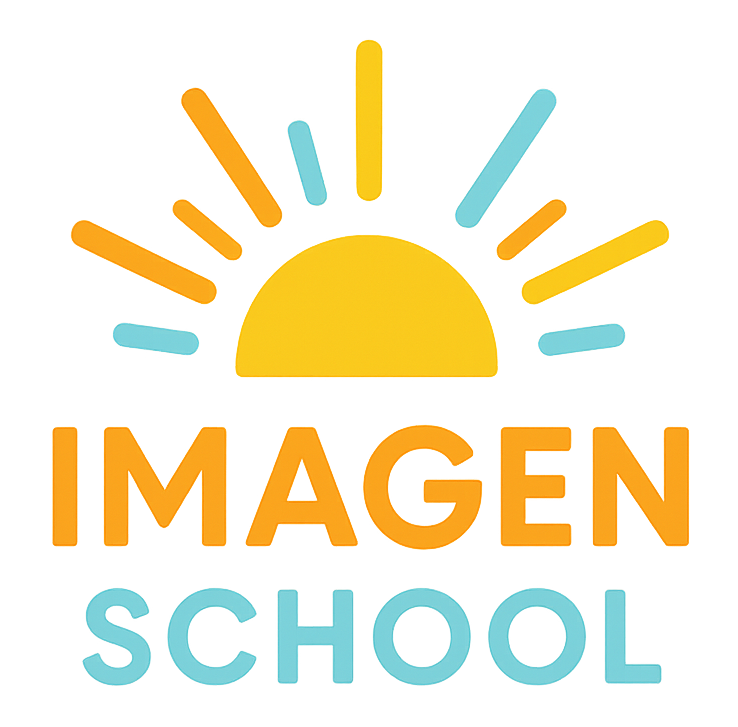
Imagen School La mejor versión de ti empieza por tu imagen Grado 10° · 7 módulos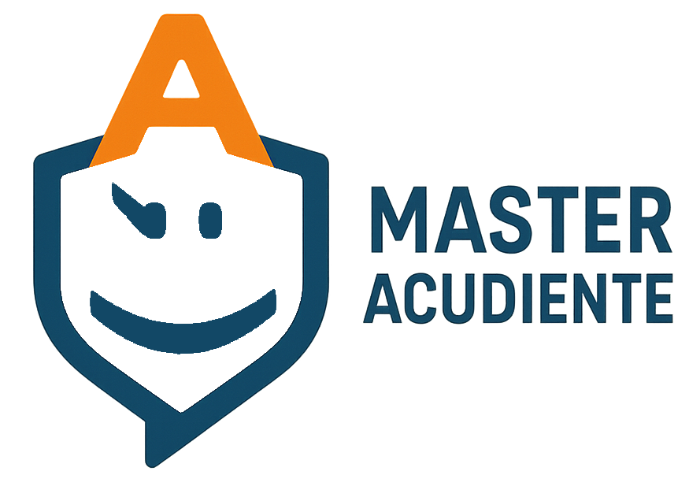
Master Acudiente La familia informada, el estudiante acompañado Grado 10° · 8 módulos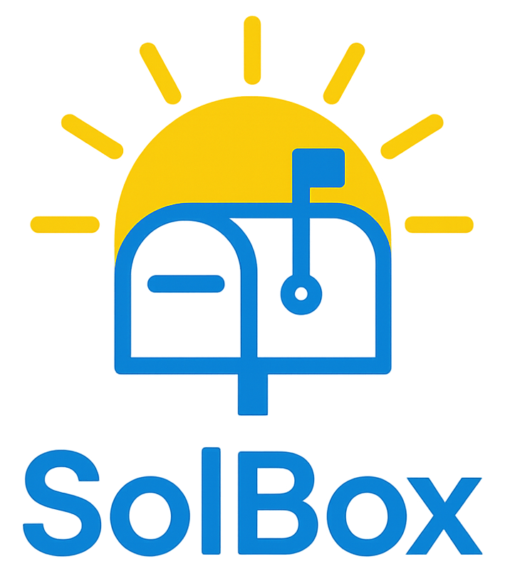
SolBox Tu voz, escuchada y atendida Grado 10° · 8 módulosI.E. Lola González 2026 · 9 proyectos
I.E. Sol de Oriente 2026 · 12 proyectos
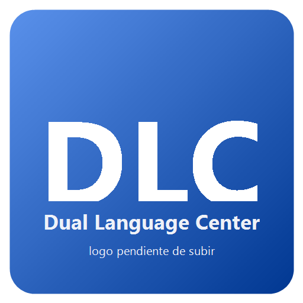
Dual Language Center Un idioma más, un mundo más Grado 10° · 7 módulos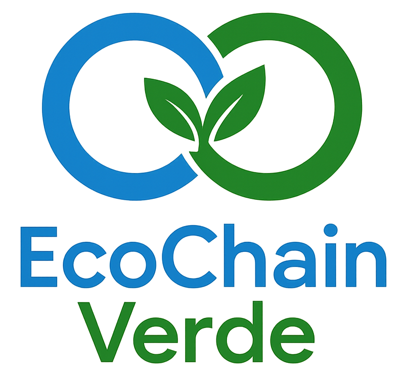
EcoChain Verde Cada residuo cuenta, cada acción suma Grado 11° · 8 módulos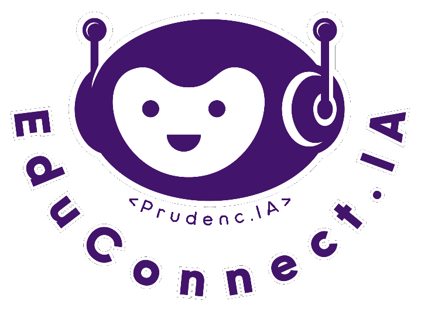
EduConnect.IA Un tutor inteligente que nunca cierra Grado 10° · 7 módulos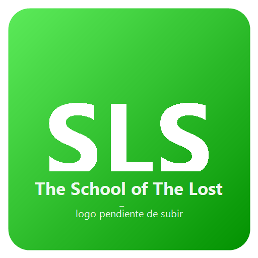
The School of The Lost Souls Ningún estudiante se queda atrás Grado 10° · 7 módulos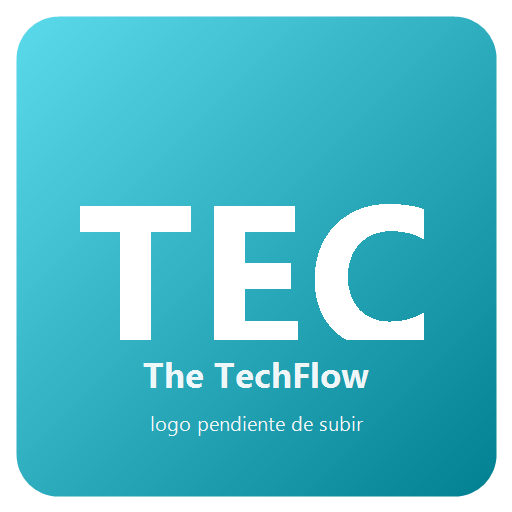
The TechFlow La tecnología, fluyendo Grado 10° · 8 módulos